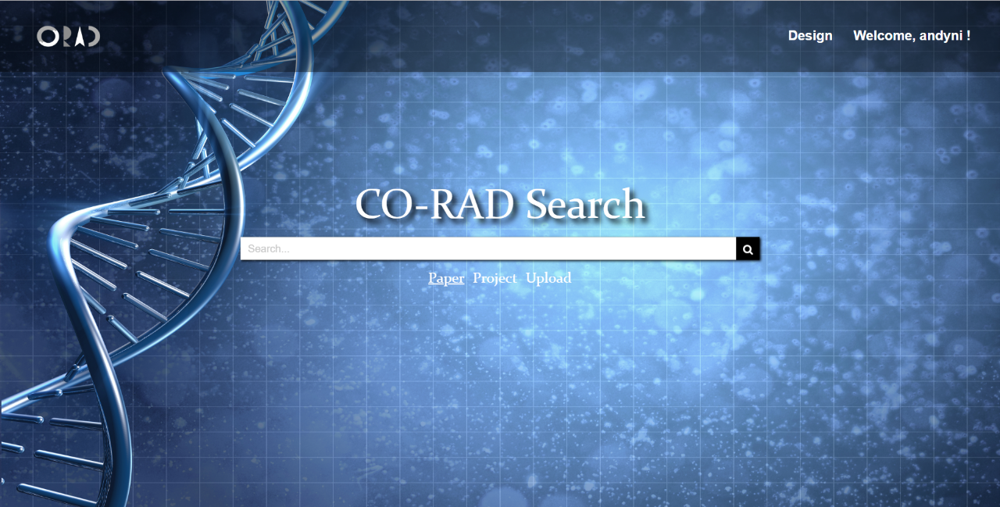
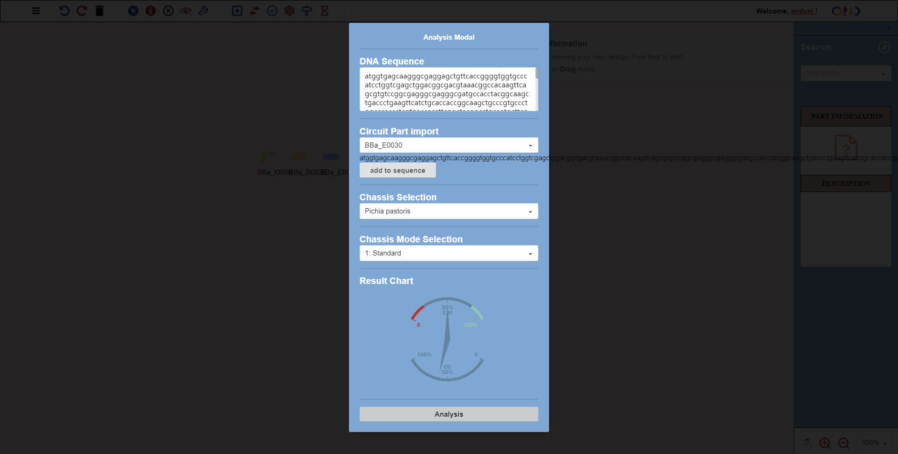

CO-RAD is not a question-and-answer community website, we offer a new collaboration method for synthetic
biologists. We believe that face-to-face communication is the most efficient way to collaborate, therefore, we
want users to be as efficient as face-to-face communication with our newly designed real-time collaborative
designer and shared sketchpad. Additionally, our vast database and mathematical algorithms provide users with
new perspectives and thinking to help users come up with more valuable ideas when collaborating to improve the
quality of collaboration.
Good collaboration = convenient and quick way to collaborate + valuable communication content

There are various kinds of online collaboration software, such as Google Docs, which greatly improve the
efficiency of teamwork. To this end, we hope to bring this effective way of collaboration into the field of
synthetic biology. Unlike other design software that can only be used locally, the online design platform in
CO-RAD can invite anyone to join, and with the permission, everyone's changes can be displayed on other
people's computers in real time. Users can add any new components to the circuits on this platform, edit the
relationship between the various devices, and even write the protocol used in the experiment to make their
design more complete. At the same time, we also support historical version backtracking, and each change can be
withdrawn.

In the process of face-to-face communication, it is very common to use pen and paper to express their ideas. In
order to improve the efficiency of remote collaboration, we have developed the function of sharing sketchpad.
With the circuit picture as the background, users can draw arbitrary content to express their own ideas, which
will be displayed in real time on other users' computers.
Our software is not a closed platform. In order to improve software compatibility, we support the import and
export of SBOL files. This allows circuits edited on other software to be quickly imported into our software
without having to re-edit.

Good collaboration requires good advice, and a good proposal cannot be separated from a summary of past
successful experience, a deep understanding of existing designs, and sometimes computer assistance. To this
end, we have developed several functions, hoping to enlighten users' inspiration and open up users' thinking.
Every year, hundreds of teams participate in the iGEM competition, and a large number of synthetic biology
literatures are published. By understanding these successful projects, users can improve their own experimental
designs or provide more reliable advice for the designs of others. We have collected a lot of data stored in
our database, including project from previous years' iGEM teams and well-known journals. Users can search for
interesting projects by keywords and get inspiration for designing or optimizing their own designs.

When a user builds a circuit on the design platform, our software will automatically recommend a project with
similar circuits based on the user's circuit design.
Deeper understanding of the circuit design can help users put forward more constructive comments. CO-RAD can
calculate two common values, the CG and CAI values of components, to assist the user in deciding whether to
modify or optimize the components of the circuit.

CO-RAD can analyze the circuit designed by a user, and build corresponding mathematical models to provide a
reference for him or her by simulating the expression of the product.
We use an algorithm that simulates the evolution of biological orientation to assist the user in modifying his
or her own circuit designs. After the user determines the desired expression level, the algorithm simulates the
process of reproduction, elimination, mutation, etc., and iteratively obtains the optimal component dynamics
parameters. These parameters can help the user to modify or optimize his or her circuit parts